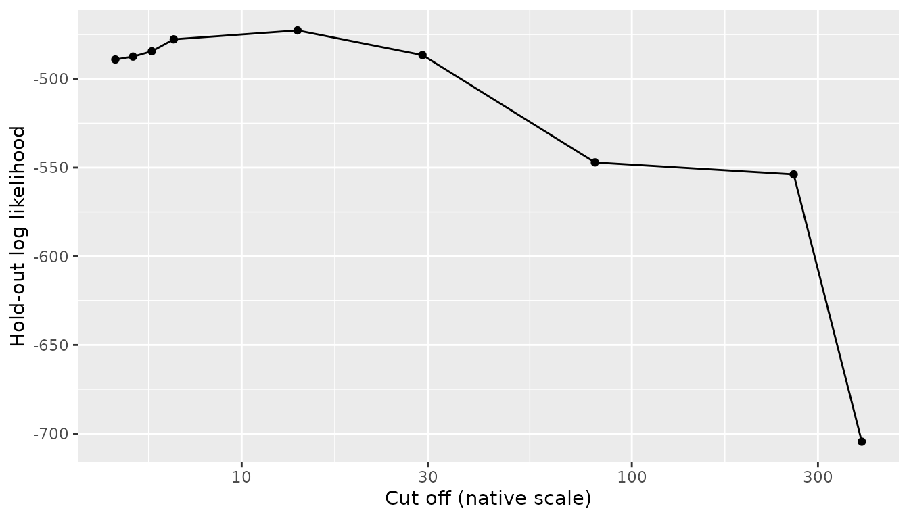

The complexity of a Variable Length Markov Chain (VLMC) or of a VLMC
with covariates (COVLMC) is controlled mainly by a cut off parameter: a
large model is first built and then pruned, removing the contexts that
do not change significantly the conditional distribution of the next
state. The introductory vignettes,
vignette("variable-length-markov-chains") and
vignette("covlmc"), present the estimation algorithms and
the basic use of the automatic model selection functions
tune_vlmc() and tune_covlmc(), while
vignette("likelihood") discusses the likelihood functions
on which information criteria are based. This vignette is a practical
guide that goes further: it explains how the automatic selection works,
how to read its results, how to obtain other models than the selected
one and how to implement other selection strategies, such as hold-out
validation.
Running example
We use the household electricity consumption data set included in the
package (powerconsumption, one observation every 10
minutes). We keep three weeks of data and turn the active power into a
binary time series: the consumption is low below 0.4 kW
(typically at night or when nobody is at home) and high
above.
pc <- powerconsumption[powerconsumption$week %in% 15:17, ]
elec <- cut(pc$active_power,
breaks = c(0, 0.4, 8),
labels = c("low", "high")
)
table(elec)
#> elec
#> low high
#> 1082 1942The first two weeks are used to estimate the models and the third one is kept for hold-out validation (see below).
Automatic selection with tune_vlmc()
Principle
tune_vlmc() implements the following procedure:
- it fits a large VLMC with
vlmc(), using a conservative (small) cut off, so that the context tree is limited essentially by themin_sizeparameter; - it computes with
cutoff()all the cut off values that lead to a different (simpler) model; - it prunes the model successively with
prune()using those values, until the memoryless model (a single context) is reached; - it evaluates an information criterion (BIC or AIC) for each model and returns the model that minimises it. In case of a tie, the simplest model is preferred.
As pruning a VLMC with a given cut off gives the model that
vlmc() would build directly with this cut off (up to
numerical instabilities), this procedure explores all the
models that can be obtained from the time series with cut off values
larger than the initial one, and does so far more efficiently than
repeated calls to vlmc().
elec_tune <- tune_vlmc(elec_train)
elec_tune
#> VLMC context tree on low, high [C++]
#> cutoff: 4.743 (quantile: 0.00207)
#> Number of contexts: 11
#> Maximum context length: 6
#> Selected by BIC (1352.149) with likelihood function "truncated" (-634.2999)The selected model can be extracted with as_vlmc() (or
as the best_model component of the result).
elec_vlmc <- as_vlmc(elec_tune)
draw(elec_vlmc)
#> ▪ (0.3269, 0.6731)
#> ├─ low (0.8088, 0.1912)
#> │ └─ low (0.8086, 0.1914)
#> │ └─ low (0.7935, 0.2065)
#> │ └─ low (0.807, 0.193)
#> │ └─ high (0.6061, 0.3939)
#> └─ high (0.09292, 0.9071)
#> ├─ low (0.3492, 0.6508)
#> └─ high (0.06672, 0.9333)
#> ├─ low (0.3457, 0.6543)
#> └─ high (0.04708, 0.9529)
#> ├─ low (0.1698, 0.8302)
#> └─ high (0.04026, 0.9597)
#> ├─ low (0.1818, 0.8182)
#> └─ high (0.03432, 0.9657)
#> └─ low (0.1667, 0.8333)Main parameters
The behaviour of tune_vlmc() is controlled by the
following parameters:
-
criterion: the information criterion to minimise,"BIC"(default) or"AIC". The BIC is consistent and generally leads to simpler models, while the AIC can be preferred for prediction or simulation oriented uses of the model; -
initial: the likelihood function used to compute the criterion,"truncated"(default),"specific"or"extended"(see the section on likelihood functions below); -
alpha_initandcutoff_init: the cut off used to build the initial model, in quantile and native scale respectively (cutoff_inittakes precedence). The default value, in native scale, is \(\frac{1}{4}\log n\) for the BIC (with \(n\) the length of the time series) and 1 for the AIC. The models considered are all simpler than this initial model. If the selected model is the initial one (the first row of the results described below), a more permissive (smaller) cut off should be used; -
min_size: the minimal number of occurrences of a context in the time series to be included in the initial context tree (default: 2); -
max_depth: the initial maximal length of the contexts (default: 100). This parameter is not a complexity control parameter: when the initial context tree reachesmax_depth, the value is doubled and the model is fitted again, until the depth of the tree is limited only bymin_size. A small value gives therefore the same results as the default one; -
backend: the implementation of the context tree,"R"or"C++"(default: the value of themixvlmc.backendoption, that is"C++"unless it has been changed). Both backends give the same results, but the C++ one is faster on long time series. As it builds the complete suffix tree of the time series, the maximal depth is directly set to its largest possible value; -
verbose: when larger than 0, the progress of the selection (increases ofmax_depth, pruning steps and improvements of the criterion) is reported withmessage(); -
save: which models are kept in the result, see the section on getting other models below.
For instance, the R backend with a very small initial
max_depth gives the same results as the C++ backend used
above:
Reading the results
Printing the result of tune_vlmc() shows the selected
model, the value of the criterion and of the log likelihood, as above.
summary() adds the characteristics of all the models
considered during the selection:
summary(elec_tune)
#> VLMC tune results
#>
#> Best VLMC selected by BIC (1352.149) with likelihood function "truncated" (-634.2999)
#> VLMC context tree on low, high [C++]
#> cutoff: 4.743 (quantile: 0.00207)
#> Number of contexts: 11
#> Maximum context length: 6
#>
#> Pruning results
#> cutoff alpha depth nb_contexts loglikelihood AIC BIC
#> 1.902218 5.111701e-02 27 64 -598.5876 1325.175 1683.280
#> 1.990704 4.600510e-02 27 62 -600.6846 1325.369 1672.283
#> 2.020888 4.438710e-02 27 62 -602.4339 1328.868 1675.782
#> 2.194698 3.616314e-02 27 50 -605.6771 1311.354 1591.124
#> 2.490884 2.561578e-02 27 48 -608.0344 1312.069 1580.647
#> 2.701394 2.010461e-02 27 47 -610.6664 1315.333 1578.316
#> 2.880703 1.638196e-02 27 41 -615.2788 1312.558 1541.969
#> 3.252251 1.076017e-02 27 37 -618.4167 1310.833 1517.863
#> 3.700496 6.518791e-03 8 16 -622.6682 1277.336 1366.863
#> 4.150973 3.960262e-03 8 14 -627.9377 1283.875 1362.211
#> 4.743381 2.069598e-03 6 11 -634.2999 1290.600 1352.149
#> 5.265278 1.174169e-03 5 10 -639.8628 1299.726 1355.679
#> 5.883113 6.031517e-04 5 10 -645.4797 1310.959 1366.913
#> 6.696562 2.525483e-04 5 8 -655.6527 1327.305 1372.068
#> 13.905708 1.337347e-07 3 4 -662.8728 1333.746 1356.127
#> 29.070702 2.439377e-14 2 3 -696.5434 1399.087 1415.873
#> 80.416316 7.442709e-37 1 2 -726.5769 1457.154 1468.345
#> 259.985241 4.295009e-115 1 2 -937.2941 1878.588 1889.779
#> 388.584243 4.967445e-171 0 1 -1249.6009 2501.202 2506.797Those characteristics are stored in the results data
frame, which has one row per model, from the initial (most complex)
model to the memoryless model. Its columns are:
-
cutoffandalpha: the cut off used to build the model (byvlmc()for the first row and byprune()for the other ones) in native and quantile scale respectively; -
depthandnb_contexts: the length of the longest context and the number of contexts of the model; -
loglikelihood,AICandBIC: the log likelihood of the model and the associated information criteria.
head(elec_tune$results)
#> cutoff alpha depth nb_contexts loglikelihood AIC BIC
#> 1 1.902218 0.05111701 27 64 -598.5876 1325.175 1683.280
#> 2 1.990704 0.04600510 27 62 -600.6846 1325.369 1672.283
#> 3 2.020888 0.04438710 27 62 -602.4339 1328.868 1675.782
#> 4 2.194698 0.03616314 27 50 -605.6771 1311.354 1591.124
#> 5 2.490884 0.02561578 27 48 -608.0344 1312.069 1580.647
#> 6 2.701394 0.02010461 27 47 -610.6664 1315.333 1578.316The selected model corresponds to the row with the smallest value of the criterion:
best_row <- which.min(elec_tune$results$BIC)
elec_tune$results[best_row, ]
#> cutoff alpha depth nb_contexts loglikelihood AIC BIC
#> 11 4.743381 0.002069598 6 11 -634.2999 1290.6 1352.149The selection process can be represented graphically with
plot(), which shows the criterion (or the log likelihood
with value = "likelihood") as a function of the cut off, in
quantile scale by default. Additional parameters are passed to
base::plot(), for instance here to use a logarithmic scale
for the cut off in native scale:
plot(elec_tune, cutoff = "native", log = "x")autoplot() (which requires ggplot2) gives a more
complete representation with one panel per characteristic of the
models:

Getting another model than the selected one
Saved models
By default, tune_vlmc() keeps only the selected model.
The save parameter can be used to keep more models: with
save = "initial" the result contains in addition the
initial model, while with save = "all" it contains all the
models considered during the selection. They are stored in the
saved_models component, a list with:
-
initial: the initial model, which corresponds to the first row ofresults; -
all(only whensave = "all"): the list of the other models, in the order of the pruning process. Thek-th model of this list corresponds therefore to the rowk + 1ofresults.
For instance, we can obtain from a BIC based selection the model that minimises the AIC as follows:
elec_tune_all <- tune_vlmc(elec_train, save = "all")
length(elec_tune_all$saved_models$all)
#> [1] 18
nrow(elec_tune_all$results)
#> [1] 19
aic_row <- which.min(elec_tune_all$results$AIC)
if (aic_row == 1) {
elec_aic <- elec_tune_all$saved_models$initial
} else {
elec_aic <- elec_tune_all$saved_models$all[[aic_row - 1]]
}
elec_aic
#> VLMC context tree on low, high [C++]
#> cutoff: 3.7 (quantile: 0.006519)
#> Number of contexts: 16
#> Maximum context length: 8In this example, this model has the same contexts as the one obtained
by a direct AIC based selection, as shown below (the contexts are
compared as sets of character strings, as their order in the result of
contexts() depends on the way the context tree was built).
However, this is not always the case: because of the default values of
the initial cut off, the initial model of a BIC based selection is
simpler than the one of an AIC based selection, and the model that
minimises the AIC may be more complex than all the models considered in
a BIC based selection.
context_set <- function(model) {
ctxs <- contexts(model, sequence = TRUE)$context
sort(vapply(ctxs, paste, character(1), collapse = ", "))
}
elec_tune_aic <- tune_vlmc(elec_train, criterion = "AIC")
identical(context_set(elec_aic), context_set(as_vlmc(elec_tune_aic)))
#> [1] TRUENotice also that the criteria reported by the two selections for the same model are not identical: as explained below, the truncated likelihood used by default depends on the depth of the initial model, which differs between the two selections.
Pruning the initial model
Saving all the models can use a lot of memory for long time series.
An alternative consists in saving only the initial model and in pruning
it with the cut off of the row of interest of results. As
pruning gives the same model as a direct estimation, this reproduces
exactly the model of the selection:
elec_tune_init <- tune_vlmc(elec_train, save = "initial")
elec_aic_2 <- prune(elec_tune_init$saved_models$initial,
cutoff = elec_tune_init$results$cutoff[aic_row]
)
all.equal(elec_aic, elec_aic_2)
#> [1] TRUEThe native scale (cutoff column) should be preferred to
the quantile one (alpha column) for this operation, as the
latter can be very close to zero for simple models and suffer from
rounding errors.
Manual selection with cutoff() and
prune()
Cut off scales
In a VLMC, the cut off is compared to the log likelihood ratio
between the conditional distribution of the next state given a context
and the one given its parent context (the context shortened by one
state): starting from the leaves of the context tree, a context is
removed when this ratio is smaller than the cut off. This is the
native scale of the cut off, used by the cutoff
parameters of vlmc(), prune() and
tune_vlmc(). A larger value in native scale leads to a
simpler model.
The quantile scale, used by the alpha
parameters, interprets the pruning decision as a likelihood ratio test:
twice the log likelihood ratio follows asymptotically a \(\chi^2\) distribution with \(|S|-1\) degrees of freedom (where \(|S|\) is the number of states) and
alpha is the level of the test, that is the probability
that the \(\chi^2\) variable exceeds
twice the cut off. A smaller value in quantile scale leads to a
simpler model. The two columns of results are related as
follows:
nb_states <- length(states(elec_vlmc))
all.equal(
elec_tune$results$alpha,
pchisq(2 * elec_tune$results$cutoff, df = nb_states - 1, lower.tail = FALSE)
)
#> [1] TRUEThe native scale is more directly related to the information
criteria: removing a context with \(|S|-1\) parameters from a model decreases
the BIC when its log likelihood ratio is smaller than \(\frac{|S|-1}{2}\log n\) (and the AIC when
it is smaller than \(|S|-1\)). The
default initial cut offs of tune_vlmc() (\(\frac{1}{4}\log n\) and 1) are smaller than
or equal to those thresholds, so that the initial model keeps the
contexts that may be useful according to the criterion.
Candidate cut off values
cutoff() returns the cut off values that lead to all the
models simpler than a given one. By default, the values are in quantile
scale, in decreasing order (from the least to the most pruned model).
With scale = "native" they are in increasing order.
cutoff(elec_vlmc, scale = "native")
#> [1] 5.265278 5.883113 6.696562 13.905708 29.070702 80.416316 259.985241
#> [8] 388.584243The default values are guaranteed to induce pruning: they are placed
between the actual log likelihood ratios of the model, which are
obtained with raw = TRUE (see also the cutoff
parameter of contexts(), described in
vignette("dts-and-contexts"), which reports the ratio of
each context):
cutoff(elec_vlmc, scale = "native", raw = TRUE)
#> [1] 5.059872 5.479023 6.317005 7.098926 27.239151 31.025406 208.435109
#> [8] 324.284742Pruning with the first value gives the least pruned model simpler than the reference one:
A custom selection rule
The results data frame and prune() make it
easy to implement other selection rules. For instance, we may look for
an easily interpretable model with a memory of at most 30 minutes, that
is with contexts of length at most three. The best model according to
the BIC under this constraint is obtained as follows:
init_results <- elec_tune_init$results
short_rows <- which(init_results$depth <= 3)
short_row <- short_rows[which.min(init_results$BIC[short_rows])]
elec_short <- prune(elec_tune_init$saved_models$initial,
cutoff = init_results$cutoff[short_row]
)
draw(elec_short)
#> ▪ (0.3269, 0.6731)
#> ├─ low (0.8088, 0.1912)
#> └─ high (0.09292, 0.9071)
#> ├─ low (0.3492, 0.6508)
#> └─ high (0.06672, 0.9333)
#> └─ low (0.3457, 0.6543)This model has 4 contexts and a BIC of 1356.13, while the BIC of the selected model (with 11 contexts) is 1352.15.
Likelihood functions and number of parameters
Likelihood functions
In a VLMC of depth \(d\), the
contexts of the first \(d\)
observations of a time series are not completely known. The
initial parameter of loglikelihood(),
logLik() and of the selection functions specifies how those
observations are handled:
-
"truncated": they are excluded from the likelihood; -
"specific": each of them is predicted by a specific context, with a perfect prediction and one additional parameter; -
"extended": they are predicted using shorter contexts, which may turn internal nodes of the context tree into additional contexts.
vignette("likelihood") describes these functions in
detail. For model selection, the main point is that the truncated
likelihood of models of different depths is computed on different
observations. To allow a fair comparison, tune_vlmc() and
tune_covlmc() exclude from the likelihood of all the models
the first observations, as many as the depth of the initial model. As a
consequence, the criteria reported in results differ from
the ones computed directly on the selected model:
They can be reproduced with the ignore parameter of
loglikelihood(), which specifies the number of initial
observations excluded from the likelihood (this requires passing the
time series as newdata):
elec_ll <- loglikelihood(elec_vlmc,
newdata = elec_train,
ignore = elec_tune$results$depth[1]
)
elec_ll
#> 'log Lik.' -634.2999 (df= 11, nb obs.= 1989, initial="truncated")
BIC(elec_ll)
#> [1] 1352.149This also means that the criteria reported by two calls to
tune_vlmc() with different initial models (for instance
with different values of min_size or of the criterion, as
seen above) are not directly comparable. When models selected separately
must be compared, their likelihood must be computed on the same
observations, using an ignore value at least equal to the
largest depth of the models.
The likelihood function also has an impact on the selected model, as
the specific and extended likelihood functions tend to penalise complex
models more than the truncated one (see
vignette("likelihood")):
elec_tunes <- lapply(
c("truncated", "specific", "extended"),
function(ini) as_vlmc(tune_vlmc(elec_train, initial = ini))
)
data.frame(
initial = c("truncated", "specific", "extended"),
depth = sapply(elec_tunes, depth),
nb_contexts = sapply(elec_tunes, context_number)
)
#> initial depth nb_contexts
#> 1 truncated 6 11
#> 2 specific 3 4
#> 3 extended 3 4Number of parameters
The number of parameters used by the information criteria is given by
the df attribute of the log likelihood. In a VLMC, each
context is associated with a probability distribution on the state
space, that is with \(|S|-1\)
parameters. The specific likelihood adds one parameter per specific
context (that is the depth of the model), while the extended likelihood
adds \(|S|-1\) parameters for each
internal node turned into a context.
context_number(elec_vlmc) * (nb_states - 1)
#> [1] 11
sapply(
c("truncated", "specific", "extended"),
function(ini) attr(logLik(elec_vlmc, initial = ini), "df")
)
#> truncated specific extended
#> 11 17 16Notice that all the \(|S|-1\) parameters of a context are counted, even if some states never follow this context in the time series (and have therefore a zero estimated probability). The same rule applies to the intercepts of the logistic models of a COVLMC, as explained below.
Hold-out validation
Information criteria are not the only way to choose a model. When
enough data are available, the models can be compared on their capacity
to predict new observations, by computing their log likelihood on a
hold-out part of the time series that was not used to estimate them.
This is done with the newdata parameter of
loglikelihood().
A convenient way to evaluate the models on the hold-out observations
is to pass the complete time series as newdata and
to exclude the training observations from the likelihood with
ignore. This way, the contexts of the first hold-out
observations are computed using the last training observations, and all
the models are evaluated on exactly the same observations:
elec_models <- c(
list(elec_tune_all$saved_models$initial),
elec_tune_all$saved_models$all
)
holdout_ll <- sapply(
elec_models,
function(model) loglikelihood(model, newdata = elec, ignore = n_train)
)
elec_holdout <- cbind(
elec_tune_all$results[c("cutoff", "depth", "nb_contexts", "AIC", "BIC")],
holdout = holdout_ll
)
elec_holdout
#> cutoff depth nb_contexts AIC BIC holdout
#> 1 1.902218 27 64 1325.175 1683.280 -Inf
#> 2 1.990704 27 62 1325.369 1672.283 -Inf
#> 3 2.020888 27 62 1328.868 1675.782 -Inf
#> 4 2.194698 27 50 1311.354 1591.124 -Inf
#> 5 2.490884 27 48 1312.069 1580.647 -Inf
#> 6 2.701394 27 47 1315.333 1578.316 -Inf
#> 7 2.880703 27 41 1312.558 1541.969 -Inf
#> 8 3.252251 27 37 1310.833 1517.863 -Inf
#> 9 3.700496 8 16 1277.336 1366.863 -Inf
#> 10 4.150973 8 14 1283.875 1362.211 -Inf
#> 11 4.743381 6 11 1290.600 1352.149 -489.0711
#> 12 5.265278 5 10 1299.726 1355.679 -487.4303
#> 13 5.883113 5 10 1310.959 1366.913 -484.4389
#> 14 6.696562 5 8 1327.305 1372.068 -477.6947
#> 15 13.905708 3 4 1333.746 1356.127 -472.6771
#> 16 29.070702 2 3 1399.087 1415.873 -486.5777
#> 17 80.416316 1 2 1457.154 1468.345 -547.0952
#> 18 259.985241 1 2 1878.588 1889.779 -553.8398
#> 19 388.584243 0 1 2501.202 2506.797 -704.5420Complex models have a log likelihood of -Inf on the
hold-out data: they give a zero probability to some transitions observed
in the hold-out data, a clear sign of overfitting. This happens in
particular for the model selected by the AIC. On the contrary, the model
with the highest hold-out log likelihood is simpler than the model
selected by the BIC:
holdout_row <- which.max(holdout_ll)
elec_holdout[c(aic_row, best_row, holdout_row), ]
#> cutoff depth nb_contexts AIC BIC holdout
#> 9 3.700496 8 16 1277.336 1366.863 -Inf
#> 11 4.743381 6 11 1290.600 1352.149 -489.0711
#> 15 13.905708 3 4 1333.746 1356.127 -472.6771
ggplot(
elec_holdout[is.finite(elec_holdout$holdout), ],
aes(x = cutoff, y = holdout)
) +
geom_line() +
geom_point() +
scale_x_log10() +
xlab("Cut off (native scale)") +
ylab("Hold-out log likelihood")
Notice that zero probabilities make the log likelihood a very
demanding criterion, especially when the number of states is larger than
two, as rare transitions are often missing from the training data. Other
ways of assessing the predictive performances of a model, based on
predict() and metrics(), are described in
vignette("prediction").
Model selection for VLMC with covariates
We consider now a COVLMC with a categorical covariate, the period of the day, which is a factor with four levels.
period <- cut(pc$hour,
breaks = c(-1, 6, 12, 18, 23),
labels = c("night", "morning", "afternoon", "evening")
)
elec_cov <- data.frame(period = period)
elec_cov_train <- elec_cov[1:n_train, , drop = FALSE]Automatic selection with tune_covlmc()
tune_covlmc() follows the same principle as
tune_vlmc() and shares most of its parameters
(criterion, initial, alpha_init,
min_size, max_depth, verbose and
save). The main differences are the following:
- there is a single implementation of COVLMC, hence no
backendparameter, and the default value ofmin_sizeis 5 (see below); - the cut off is expressed only in quantile scale: the pruning
decisions of the COVLMC algorithm are based on likelihood ratio tests
between logistic models whose numbers of parameters vary, and there is
no meaningful native scale.
cutoff()returns therefore \(p\)-values andprune()accepts onlyalpha. The initial model is built withalpha_init, which defaults to 0.5; - pruning a COVLMC requires fitting new logistic models, and
cutoff()returns only a subset of the useful cut off values.tune_covlmc()prunes therefore the models one step at a time, using the largest cut off value of the current model that is smaller than its own cut off; - the
controlparameter gives additional parameters for the estimation of the models (seecovlmc_control()), currently the number of pseudo observations used to regularise the probability estimates of the contexts always followed by the same state; - the
resultsdata frame has nocutoffcolumn but acov_depthcolumn which gives the longest memory used for the covariates by the model (seecovariate_depth()).
elec_cov_tune <- tune_covlmc(elec_train, elec_cov_train)
elec_cov_tune
#> VLMC with covariates context tree on low, high
#> cutoff in quantile scale: 0.01574
#> Number of contexts: 4
#> Maximum context length: 3
#> Selected by BIC (1361.775) with likelihood function "truncated" (-654.2635)
elec_cov_tune$results
#> alpha depth nb_contexts loglikelihood cov_depth AIC BIC
#> 1 5.000000e-01 4 7 -622.4287 3 1324.857 1549.133
#> 2 3.359495e-01 3 6 -627.0475 3 1320.095 1505.122
#> 3 2.874436e-01 3 5 -626.7497 3 1323.499 1519.740
#> 4 2.134115e-01 3 5 -628.9934 3 1321.987 1501.407
#> 5 1.160729e-01 3 5 -634.3089 3 1320.618 1466.397
#> 6 9.198712e-02 3 5 -637.5298 3 1321.060 1450.018
#> 7 8.979598e-02 3 4 -638.5809 3 1315.162 1421.693
#> 8 5.094820e-02 3 4 -644.0860 1 1314.172 1387.062
#> 9 1.860844e-02 3 4 -649.0835 1 1318.167 1374.236
#> 10 1.574122e-02 3 4 -654.2635 1 1322.527 1361.775
#> 11 2.272293e-05 2 3 -664.5041 1 1341.008 1374.650
#> 12 9.196045e-10 1 2 -683.3084 1 1376.617 1404.651
#> 13 5.632814e-24 1 2 -738.3257 0 1480.651 1491.865
#> 14 1.072698e-233 0 1 -1271.7068 0 2545.414 2551.020The selected model uses the covariate in one of its contexts (see the article Drawing context trees and models for the representation of the logistic models):
elec_covlmc <- as_covlmc(elec_cov_tune)
draw(elec_covlmc, model = "full")
#> ▪
#> ├─ low ([ (I)
#> │ -1.442 ])
#> └─ high
#> ├─ low ([ (I)
#> │ 0.6225 ])
#> └─ high
#> ├─ low ([ (I)
#> │ 0.6381 ])
#> └─ high ([ (I) • period_1morning period_1afternoon period_1evening
#> 1.44 • 2.084 1.408 2.223 ])summary(), plot() and
autoplot() work as for tune_vlmc() (except
that plot() does not support the native scale).

Notice that the models of a COVLMC selection are not strictly nested: removing a context can give to its parent context a logistic model with a longer memory of the covariates. As a consequence, the number of parameters and the log likelihood do not always decrease along the pruning process.
Saved models and memory occupation
The save parameter has the same meaning as for
tune_vlmc(), with the same organisation of the
saved_models component. As COVLMC objects can be large, the
intermediate models of saved_models$all are saved in a
trimmed form (see trim.covlmc()), as specified by the
trimming parameter:
-
"full"(default): the logistic models are removed, which saves a lot of memory but prevents the use of the models on new data (loglikelihood()withnewdata,predict(),simulate()); -
"partial": the logistic models are kept in a simplified form, which enables the use of the models on new data; -
"none": no trimming, which is recommended only for small data sets.
The initial model and the selected one are not trimmed by default,
but they can be trimmed with the best_trimming parameter
(which takes the same values), for instance to reduce the size of the
results in parallel processing. As trimmed models cannot be pruned, the
initial model must not be trimmed to obtain new models with
prune(). The memory occupied by COVLMC objects and the
operations supported by trimmed models are detailed in the article Computing
engines and control of VLMC with covariates.
Unlike for VLMC, pruning the initial model with the
alpha value of a row of results does not
always give the model obtained by the successive pruning steps of
tune_covlmc(), as each step fits new logistic models.
Saving all the models is therefore the only reliable way to recover the
models considered during a COVLMC selection.
Number of parameters
The number of parameters of a COVLMC, used by the information
criteria, is the sum of the numbers of parameters of the logistic models
of its contexts. As for a VLMC, the model of a context has \(|S|-1\) intercepts, even if some states
never follow this context. The coefficients of the covariates are
counted only when they are actually estimated: the ones associated with
the states that never follow a context or with the levels of factors
absent from the data of a context are not counted, and a context always
followed by the same state has therefore only \(|S|-1\) parameters. Counting all the
intercepts ensures that each context has a cost in the information
criteria (see the “Number of parameters” section of
?loglikelihood.covlmc and the article on computing engines
cited above for details).
This number can be read on the representation of the model given above: each context has an intercept (\(|S|-1=1\) for this binary time series) and the context that uses the covariate has in addition one coefficient per level of the period of the day (except the reference level) for each time step of its covariate memory. The likelihood ratio tests used to build the model rely instead on the nominal number of parameters, which counts the coefficients of the covariates for all the states and all the levels of the factors, as in the original algorithm.
Choosing min_size
While min_size has generally little influence on the
models selected for VLMC, this is not the case for COVLMC: it specifies
the number of observations per parameter of the logistic models needed
for a context to be considered. There is no automatic support for this
choice in mixvlmc, but it is easy to compare the models
selected for a few values of min_size. As explained above,
the criteria must be computed on the same observations, here with an
ignore value equal to the largest depth of the models. We
compute in addition the hold-out log likelihood of the models, using the
newcov parameter to give the covariates of the complete
time series.
min_sizes <- c(2, 5, 10, 20)
cov_models <- lapply(
min_sizes,
function(ms) as_covlmc(tune_covlmc(elec_train, elec_cov_train, min_size = ms))
)
common_ignore <- max(sapply(cov_models, depth))
data.frame(
min_size = min_sizes,
depth = sapply(cov_models, depth),
nb_contexts = sapply(cov_models, context_number),
cov_depth = sapply(cov_models, covariate_depth),
BIC = sapply(cov_models, function(model) {
BIC(loglikelihood(model,
newdata = elec_train, newcov = elec_cov_train,
ignore = common_ignore
))
}),
holdout = sapply(cov_models, function(model) {
loglikelihood(model,
newdata = elec, newcov = elec_cov,
ignore = n_train
)
})
)
#> min_size depth nb_contexts cov_depth BIC holdout
#> 1 2 3 4 1 1365.085 -478.5786
#> 2 5 3 4 1 1365.085 -478.5786
#> 3 10 2 3 1 1377.236 -495.3784
#> 4 20 1 2 1 1407.034 -531.5423Small values of min_size give here the same model, while
larger values give simpler models with a higher BIC and a lower hold-out
log likelihood. Notice that the BIC values differ from the ones reported
by tune_covlmc(), which are computed with an
ignore value that depends on the initial model, and thus on
min_size.
Hold-out validation
Finally, all the models considered by tune_covlmc() can
be compared on the hold-out data, provided they are saved with a
trimming that keeps the logistic models:
elec_cov_tune_all <- tune_covlmc(elec_train, elec_cov_train,
save = "all", trimming = "partial"
)
cov_models_all <- c(
list(elec_cov_tune_all$saved_models$initial),
elec_cov_tune_all$saved_models$all
)
cov_columns <- c("alpha", "depth", "nb_contexts", "cov_depth", "BIC")
cov_holdout <- cbind(
elec_cov_tune_all$results[cov_columns],
holdout = sapply(cov_models_all, function(model) {
loglikelihood(model, newdata = elec, newcov = elec_cov, ignore = n_train)
})
)
cov_holdout
#> alpha depth nb_contexts cov_depth BIC holdout
#> 1 5.000000e-01 4 7 3 1549.133 -719.3309
#> 2 3.359495e-01 3 6 3 1505.122 -718.4389
#> 3 2.874436e-01 3 5 3 1519.740 -715.3287
#> 4 2.134115e-01 3 5 3 1501.407 -709.0396
#> 5 1.160729e-01 3 5 3 1466.397 -562.4606
#> 6 9.198712e-02 3 5 3 1450.018 -562.1813
#> 7 8.979598e-02 3 4 3 1421.693 -545.4311
#> 8 5.094820e-02 3 4 1 1387.062 -479.1346
#> 9 1.860844e-02 3 4 1 1374.236 -480.4273
#> 10 1.574122e-02 3 4 1 1361.775 -478.5786
#> 11 2.272293e-05 2 3 1 1374.650 -495.3784
#> 12 9.196045e-10 1 2 1 1404.651 -531.5423
#> 13 5.632814e-24 1 2 0 1491.865 -547.0952
#> 14 1.072698e-233 0 1 0 2551.020 -704.5420In this example, the model with the highest hold-out log likelihood (row 10) is the one selected by the BIC (row 10). Its hold-out log likelihood, -478.58, is higher than the one of the VLMC selected by the BIC, -489.07, but lower than the best hold-out log likelihood obtained by a VLMC, -472.68: the effect of the period of the day found on the first two weeks does not fully carry over to the third one. With a single week of hold-out data, such small differences should not be over-interpreted.